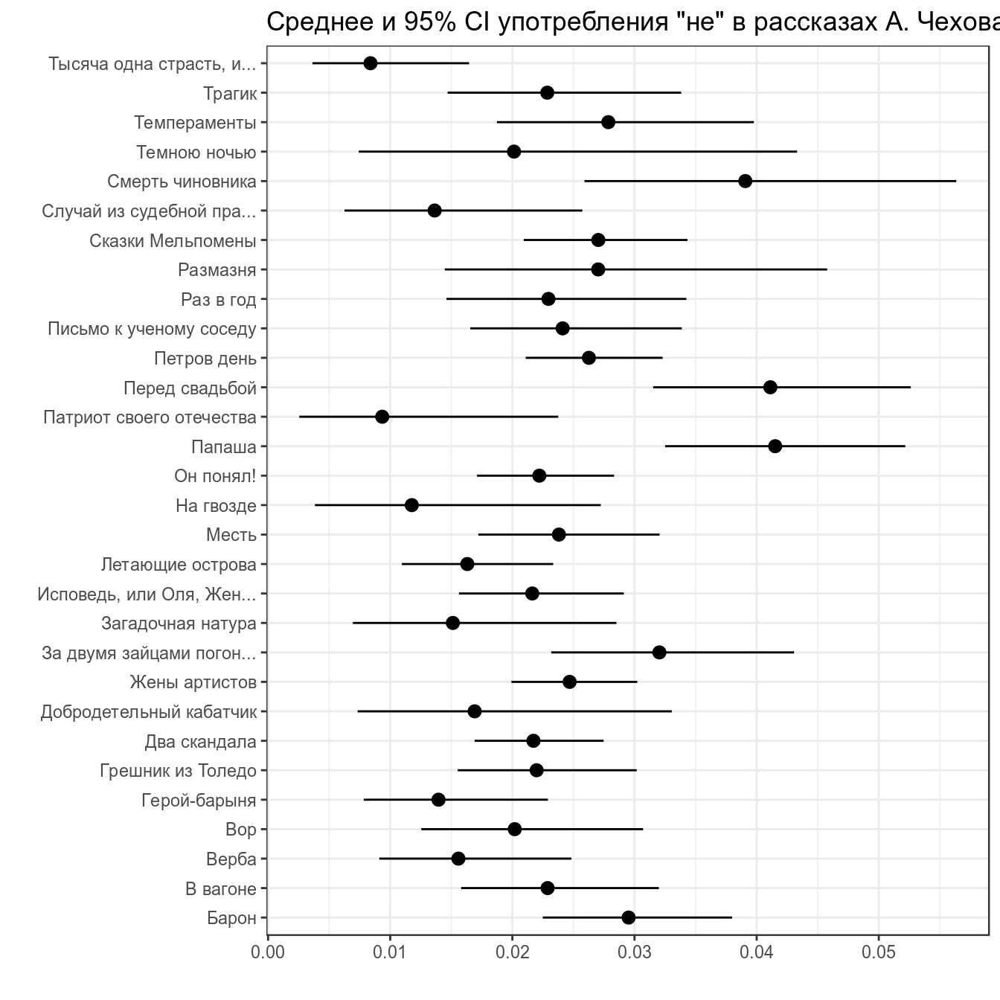
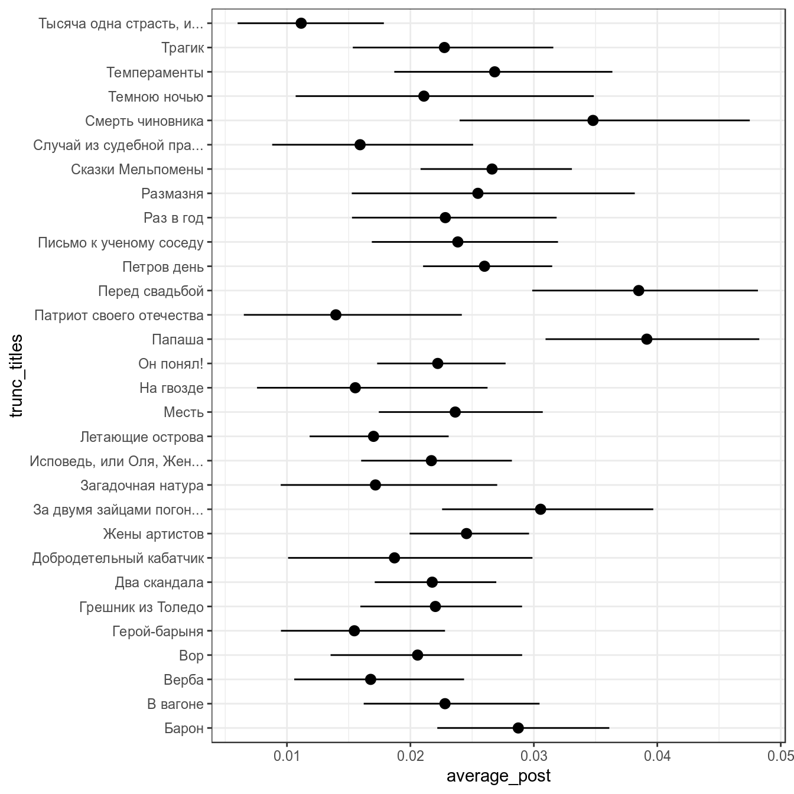
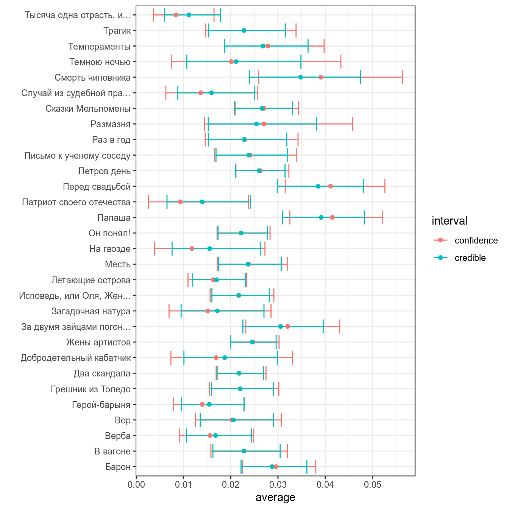

4. Empirical Bayes Estimation. Байесовский доверительный интервал. Bayes Factor
Г. Мороз
1. Empirical Bayes Estimation
Метод Empirical Bayes estimation — один из байесовских методов, в рамках которого:
- производят оценку априорного распределения вероятностей на основании имеющихся данных
- используют полученное априорное распределение для получение апостериорной оценки для каждого наблюдения
## Parsed with column specification:
## cols(
## titles = col_character(),
## word = col_character(),
## n = col_double(),
## n_words = col_double()
## )chekhov %>%
mutate(trunc_titles = str_trunc(titles, 25, side = "right"),
average = n/n_words) ->
chekhov
head(chekhov)- 311 рассказов А. Чехова
- число слов в каждом рассказе
- 46610 уникальных слов в каждом рассказе
Наши данные:
chekhov %>%
filter(word == "не") %>%
select(trunc_titles, word, average) %>%
ggplot(aes(average)) +
geom_histogram(fill = "lightblue")+
geom_density(color = "red")+
theme_bw()+
labs(title = 'Частотность слова "не" на основе 305 рассказов А. Чехова')## `stat_bin()` using `bins = 30`. Pick better value with `binwidth`.
В данном случае, данные можно подогнать под бета распределение \(Χ \sim Beta(α_0, β_0)\) (это далеко не всегда так). Подгонку можно осуществлять множеством разных функций, но я воспользуюсь следующей системой уравнений:
\[\mu = \frac{\alpha}{\alpha+\beta}\] \[\sigma = \frac{\alpha\times\beta}{(\alpha+\beta)^2\times(\alpha+\beta+1)}\]
Из этой системы можно выразить \(\alpha\) и \(\beta\):
\[\alpha = \left(\frac{1-\mu}{\sigma^2} - \frac{1}{\mu}\right)\times \mu^2\] \[\beta = \alpha\times\left(\frac{1}{\mu} - 1\right)\]
mu <- mean(chekhov$average[chekhov$word == "не"])
var <- var(chekhov$average[chekhov$word == "не"])
alpha0 <- ((1 - mu) / var - 1 / mu) * mu ^ 2
beta0 <- alpha0 * (1 / mu - 1)
alpha0## [1] 5.283022## [1] 231.6328Посмотрим, насколько хорошо, получившееся распределение подходит к нашим данным:
x <- seq(0, 0.1, length = 1000)
estimation <- data_frame(
x = x,
density = c(dbeta(x, shape1 = alpha0, shape2 = beta0)))
chekhov %>%
filter(word == "не") %>%
select(trunc_titles, word, average) %>%
ggplot(aes(average)) +
geom_density(fill = "lightblue")+
geom_line(data = estimation, aes(x, density))+
theme_bw()+
labs(title = 'Частотность слова "не" на основе 305 рассказов А. Чехова',
subtitle = "черной линией показано бета распределение с α = 5.283022 и β = 231.6328")
Полученное распределение можно использовать как априорное распределение для апдейта значений из каждого рассказа. Этот трюк и называется Empirical Bayes estimation.
2. Фреквентисткий доверительный интервал
Основная соль фреквинтистского доверительного интервала (по-английски confidence interval) основано на правиле трех сигм нормального распределения:
z-score:
- 95% данных находится в 1.96 стандартных отклонений
- 99% данных находится в 2.58 стандартных отклонений
Доверительный интервал:
- предположим что данные генеральной совокупности нормально распределены
- тогда доверительные интервалы выборок взятых из генеральной совокупности будут покрывать среднее генеральной совокупности
\[\bar{x} \pm z \times \frac{\sigma}{\sqrt{n}}\text{, где } z \text{ — это центральная } 1 - \frac{\alpha}{2} \text{ часть данных}\]
Распространение этой логики на биномиальные данные называется интервал Вальда:
\[\bar{x} = \theta; \sigma = \sqrt{\frac{\theta\times(1-\theta)}{n}}\]
Тогда интервал Вальда:
\[\theta \pm z\times\sqrt{\frac{\theta\times(1-\theta)} {n}}\]
Есть только одна проблема: работает он плохо. Его аналоги перечислены в других работ:
- assymptotic method with continuity correction
- Wilson score
- Wilson Score method with continuity correction
- Jeffreys interval
- Clopper–Pearson interval (default in R
binom.test()) - Agresti–Coull interval
- … см. пакет
binom
chekhov %>%
filter(word == "не") %>%
slice(1:30) %>%
group_by(titles) %>%
mutate(low_ci = binom.test(x = n, n = n_words)$conf.int[1],
up_ci = binom.test(x = n, n = n_words)$conf.int[2]) %>%
ggplot(aes(trunc_titles, average))+
geom_point()+
geom_pointrange(aes(ymin = low_ci, ymax = up_ci))+
theme_bw()+
coord_flip()+
labs(title = 'Среднее и 95% CI употребления "не" в рассказах А. Чехова',
x = "", y = "")
В базовом пакете функция binom.test() не позволяет выбирать тип доверительного интервала. ci.method = "Clopper-Pearson" возможна, если включить библиотеку mosaic.
3. Байесовский доверительный интервал
Байесовский доверительный \(k\)-% интервал (по-английски credible interval) — это интервал \([\frac{k}{2}, 1-\frac{k}{2}]\) от апостериорного распределения. Давайте используем распределение, полученное в предыдущем разделе в качестве априорного для тридцати рассказов Чехова:
chekhov %>%
filter(word == "не") %>%
slice(1:30) %>%
group_by(titles) %>%
mutate(alpha_post = n+alpha0,
beta_post = n_words-n+beta0,
average_post = alpha_post/(alpha_post+beta_post),
cred_int_l = qbeta(.025, alpha_post, beta_post),
cred_int_h = qbeta(.975, alpha_post, beta_post)) ->
posterior
posterior %>%
select(titles, n_words, average, average_post) %>%
arrange(n_words)posterior %>%
ggplot(aes(trunc_titles, average_post, ymin = cred_int_l, ymax = cred_int_h))+
geom_pointrange()+
coord_flip()+
theme_bw()

4. Bayes Factor
4.1 Формула Байеса опять
\[P(θ|Data) = \frac{P(Data|θ)\times P(θ)}{P(Data)}\]
\[\frac{P(θ|Data)}{P(θ)} = \frac{P(Data|θ)}{P(Data)}\]
Левая часть этого уравнения описывает вероятности относительно параметров, и эти вероятности представляют собой наши представления. Доля описывает, как наши представления относительно параметра θ обновляются в свете данных.
Байесовский фактор берется из этой же формулы:
\[\frac{\frac{P(M_A|Data)}{P(M_A)}}{\frac{P(M_B|Data)}{P(M_B)}} = \frac{\frac{P(Data|M_A)}{P(Data)}}{\frac{P(Data|M_B)}{P(Data)}} = \frac{P(Data|M_A)}{P(Data|M_B)} = BF_{AB}\]
Т. е. байесовский фактор по сути это всего лишь пропорция составленная из двух функций правдоподобия.
В датасете c грибами (взят c kaggle) представлено следующее распределение по месту обитания:
## Parsed with column specification:
## cols(
## .default = col_character(),
## ring_number = col_double()
## )## See spec(...) for full column specifications.df %>%
count(class, habitat) %>%
group_by(class) %>%
mutate(prop = n/sum(n)) %>%
ggplot(aes(class, prop, fill = habitat, label = round(prop, 3)))+
geom_col()+
geom_text(position = position_stack(vjust = 0.5), color = "white")Мы нашли некоторый новый вид грибов на лужайке (grasses), а потом в лесу (woods). Давайте посчитаем \(BF_{edible\ poisonous}\):
\[L(grasses,\ wood|edible) = 0.335 \times 0.447 = 0.149745\]
\[L(grasses,\ wood|poisonous) = 0.189 \times 0.324 = 0.061236\]
\[BF_{edible\ poisonous} = \frac{L(grasses,\ wood|edible)}{L(grasses,\ wood|poisonous)} = \frac{0.149745}{0.061236} = 2.445375\]
4.2
Вашего друга похитили а на почту отправили датасет, в котором записаны данные о погоде из пяти городов. Ваш телефон зазвонил, и друг сказал, что не знает куда его похитили, но за окном легкий дождь (Rain). А на следующий день — сильный дождь (Rain Thunderstorm). Посчитайте \(BH_{San\_Diego\ Auckland}\) с точностью до 1 знака после запятой.
Домашнее задание (до 5.02.2019)
- Повторить перемножение матриц
- Повторить собственные векторы
Домашнее задание (до 12.02.2019)
Домашнее задание нужно выполнять в отдельном rmarkdown файле. Получившийся файл следует помещать в соответствующую папку в своем репозитории на гитхабе. Более подробные инструкции см. на этой странице.
В вашей папке лежат данные исследования исландских данных [Coretta 2017]. В ваших данных наблюдения по длительности гласного [o] в разных контекстах для 5 спикеров.
speaker— ID спикераvowel.dur— длительность гласного (в разных словах, в разных контекстах, но мы для простоты будем это игнорировать и считать все наблюдения независимыми).

Используя среднее с 10% усеченнием (аргумент trim функции mean) и стандартное отклонение от всех наблюдений в качестве параметров априорного нормального распределения (на верхнем графике красным), произведите байесовский апдейт данных каждого спикера (красным на графике внизу) и посчитайте для получившихся апосториорных распределений байесовский 95% интервал (толстая черная линия на графике внизу).
Все подсчеты в этом домашнем задании следует производить с точностью до последнего знака после запятой.
4.1
Выведите в консоль датафрейм со средним и стандартным отклонением апостериорного распределения спикера brs02.
4.2
Выведите в консоль датафрейм с границами байесовского 95% интервала для спикера tt01.